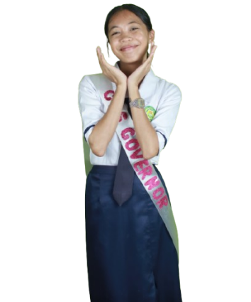
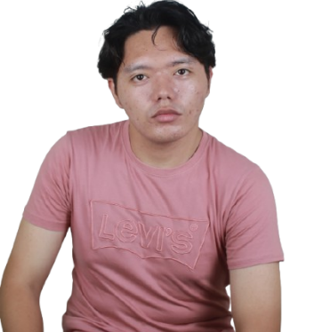

Rhezann Claire C. Pacaña
For Governor

Academic Credentials
- Graduated from Tukuran Technical Vocational High School ( Information communication technology- ICT) With honors
- Consistent Honor student in senior high school
- Board-Certified Technical Specialist in Computer Systems Servicing, National Certificate II (NCII) – Accredited by the Technical Education and Skills Development Authority (TESDA)
Extra-Curricular
- Sabayang Pagbigkas Participant (2024)
- Facilitator: HIMUGSO Video Spoof
- HIMUGSO Champion (2024–2025)
- Saint Columban Spirituality Culmination – Film Director (2nd Place)
- Facilitator: Buwan ng Lahi Harana (1st Place)
- Facilitator: Padula Darts
- Facilitator: Padula Trio
- Padula Props and Costume Committee
Leadership & Service
- Classroom President, senior high school ( 2023- 2024)
- Work immersion: Technical Assistant at paprinta(2024)
- Incumbent General Secretary, College of computing studies
Jerenze Levi T. Omandam
For Vice Governor

Academic Credentials
- Dean’s Lister – 1st Semester, Overall Top 3 (SY 2025–2026)
- Dean’s Lister – 1st Semester (SY 2024–2025)
- Dean’s Lister – 2nd Semester, Overall Top 5 (SY 2024–2025)
- Saint Columban Spirituality Culmination - Quiz Bee Participant (SY 2024–2025)
- With High Honors – 1st Quarter of 1st Semester (SY 2023–2024)
- With High Honors, Ranked 6th – 2nd Quarter of 1st Semester (SY 2023–2024)
- With High Honors, Ranked 8th – 1st Quarter of Second semester (SY 2023–2024)
- With Honors – 2nd Quarter of 2nd Semester (SY 2023–2024)
- Ranked 11th – 1st Quarter, 1st Semester (SY 2022–2023)
- With Honors, Ranked 10th – 2nd Quarter, 1st Semester (SY 2022–2023)
- With Honors, Ranked 5th – 1st Quarter, 2nd Semester (SY 2022–2023)
- With Honors – 2nd Quarter, 2nd Semester (SY 2022–2023)
- With High Honors (Academic) (SY 2021–2022)
- With Honors (Academic) (SY 2020–2021)
- Academic Achiever – Second Quarter (SY 2019–2020)
- With Honors, Ranked 4th (SY 2018–2019)
Extra-Curricular
- Buwan ng Lahi: Tagisan ng Talino Participant (SY 2025–2026)
- Battle of Codes First Runner Up (SY 2025–2026)
- Battle of Codes Reverse Alchemist Awardee (SY 2025–2026)
- HIMUGSO Overall Champion (SY 2025–2026)
- Padula Chess Tournament – Board 1 Participant (SY 2025–2026)
- Padula Acappella Participant (SY 2025–2026)
- HACK4GOV Provincial Meet – 5th Placer (SY 2024–2025)
- HIMUGSO Overall Champion (SY 2024–2025)
- HIMUGSO Family Feud Representative (SY 2024–2025)
- Padula Speech Choir Participant (SY 2024–2025)
- Padula Food Committee Member (SY 2024–2025)
- Sci-Math: Damath Grade 12 Champion (SY 2023–2024)
- Science Club Member (SY 2018–2024)
- Math Club Member (SY 2023–2024)
- MAPEH Club Member (SY 2023–2024)
- Vocational Club Member (SY 2023–2024)
- Vox Lux Et Vita Cantus Choir Member (SY 2023–2024)
- Intramurals: War of Generals Year Level First Runner-up (SY 2023–2024)
- Intramurals: Boogle – Year Level Champion (SY 2023–2024)
- Intramurals: Text Twist – Year Level Champion (SY 2023–2024)
- English Month: Spelling Bee Participant (SY 2023–2024)
- English Month: Speech Choir Participant (SY 2023–2024)
- English Month: Film Making – 1st Runner-Up (SY 2023–2024)
- Private Meet: Chess – Board 1 (2nd Place; Overall 4th Place) (SY 2023–2024)
- Pasalamat Festival – HCA Representative (Lifters) (SY 2023–2024)
- Choir Performer – Opening of Rosary Month (SY 2023–2024)
- Year Level Dance Performer – Opening of HCA 84th Founding Anniversary (SY 2023–2024)
- Choir Performer – HCA 84th Founding Anniversary (SY 2023–2024)
- Intramurals: Chess – Year Level Champion (SY 2022–2023)
- Intramurals: Chess – Overall Champion (SY 2022–2023)
- Intramurals: Scrabble – Year Level Champion (SY 2022–2023)
- Intramurals: Scrabble – Overall 1st Placer (SY 2022–2023)
- Intramurals: Squabble – Year Level Champion (SY 2022–2023)
- Private Meet: Chess – Board 2, 2nd Place (SY 2022–2023)
- Pasalamat Festival Performer – School-Based (SY 2022–2023)
- Year Level Dance Performer – Opening of HCA 83rd Founding Anniversary (SY 2023–2024)
- Intramurals: Chess – Year Level Champion (SY 2019–2020)
- Pasalamat Festival Performer – School-Based (SY 2019–2020)
- Interpretative Dance – Buwan ng Wika Champion (SY 2019–2020)
- Yell Dance – Nutrition Month Champion (SY 2019–2020)
- Faith-Based Short Film Actor – Best Film Award (SY 2019–2020)
- English Month: Waltz Performer – Champion (Best Routine) (SY 2019–2020)
- Year Level Dance Performer – Opening of HCA 80th Founding Anniversary (SY 2019–2020)
- Sabayang Pagbigkas – Buwang ng Wika Partcipant (SY 2019–2020)
- Yell Dance – Nutrition Month Partcipant (SY 2019–2020)
- District Meet: Damath Participant (SY 2018–2019)
- Intramurals: Chess – First Placer (SY 2018–2019)
- Pasalamat Festival Performer – School-Based (SY 2018–2019)
- Year Level Dance Performer – Opening of HCA 79th Founding Anniversary (SY 2018–2019)
- District Meet: Damath Champion (SY 2017–2018)
- Division Meet: Damath Participant (SY 2017–2018)
- District Meet: Chess Participant (SY 2017–2018)
- Sci-Math Camp Event – Quiz Bee Participant (SY 2017-2018)
- Boy Scouts Member (SY 2017–2018)
- Intramurals: Badminton Doubles Participant (SY 2016–2017)
- Kab Scout Member (SY 2012–2015)

Leadership & Service
- HIMUGSO Year Level MLBB Manager (SY 2025–2026)
- HIMUGSO Year Level Tekken Manager (SY 2025–2026)
- HIMUGSO Year Level Blockblast Manager (SY 2025–2026)
- HIMUGSO Year Level Typing Competition Manager (SY 2025–2026)
- HIMUGSO Year Level Wordscapes Manager (SY 2025–2026)
- HIMUGSO Year Level Overall Sub-Organizer (SY 2025–2026)
- Padula Chess – Departmental Facilitator (SY 2025–2026)
- SYBROG Club Vice President (SY 2025–2026)
- HIMUGSO Year Level MLBB Manager (SY 2024–2025)
- HIMUGSO Year Level Tekken Manager (SY 2024–2025)
- HIMUGSO Year Level Counter-Strike Manager (SY 2024–2025)
- HIMUGSO Year Level Overall Sub-Organizer (SY 2024–2025)
- Class Section Secretary – Pathfit 1 (SY 2024–2025)
- Intramurals: Chess Facilitator (SY 2023–2024)
- Classroom Officer – Vice Mayor (SY 2023–2024)